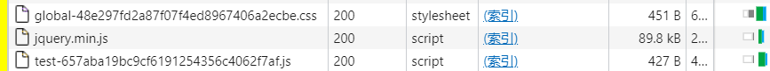

SpringBoot2
特性
依赖管理
maven父依赖
1 | <parent> |
父依赖包含了一系列插件，同时会扫描资源配置资源文件(yml , yaml , properties)，其父依赖spring-boot-dependencies会自动进行版本仲裁
1 | <resources> |
后面引入需要的场景依赖即可，若包含在spring-boot-dependencies中则不需关注版本号，例：
1 | <dependency> |
简单实例
1 | package org.example;//建议是将应用类放在组件的上级目录，但不建议放在资源根目录（java目录下） |
1 | package org.example.controller; |
同时在application.properties中指定服务器端口号，运行main入口即启动工程。
自动配置
上面的实例输出中我们可以看到一些常用的组件都被SpringBoot自动装配好了，如
SpringMVC、Tomcat、messageConverters等常见开发用的转换器自动配置的组件配置在
spring-boot-autoconfigure-xxx.jar包内META-INF目录下默认会扫描主程序所在包和其子包内的所有组件
也可以指定扫描的路径
1
等价于
1
2
3
容器管理
组件注册
@Configuration
使用配置类注册组件
1 | package org.example.config; |
proxyBeanMethods用于指定注册的组件是单实例还是多实例，默认为true单实例Lite模式
也可以使用Spring原本就支持的@ComponentScan、@Import、@Conditional以及@Bean、@Service、@Repository、@Component等进行注册
@Import
使用方式：@Import({User.class, HelloController.class})，注册组件名为全类名
@Conditional
基于实现了Condition接口的类来进行条件注册
1 | package org.example.condition; |
使用时在要进行条件注册的组件或类上进行注释
1 |
|
注册在类上时若条件不满足则配置类内所有的组件都不会注册
其扩展注解有
@ConditionalOnBean：当容器中有指定Bean的条件下进行实例化。
@ConditionalOnMissingBean：当容器里没有指定Bean的条件下进行实例化。
@ConditionalOnClass：当classpath类路径下有指定类的条件下进行实例化。
@ConditionalOnMissingClass：当类路径下没有指定类的条件下进行实例化。
@ConditionalOnWebApplication：当项目是一个Web项目时进行实例化。
@ConditionalOnNotWebApplication：当项目不是一个Web项目时进行实例化。
@ConditionalOnProperty：当指定的属性有指定的值时进行实例化。
@ConditionalOnExpression：基于SpEL表达式的条件判断。
@ConditionalOnJava：当JVM版本为指定的版本范围时触发实例化。
@ConditionalOnResource：当类路径下有指定的资源时触发实例化。
@ConditionalOnJndi：在JNDI存在的条件下触发实例化。
@ConditionalOnSingleCandidate：当指定的Bean在容器中只有一个，或者有多个但是指定了首选的Bean时触发实例化。
引入配置
引入原生配置（配置文件）
用于引入Spring原生配置文件进行组件注册，如@ImportResource("classpath:beans.xml")
获取资源文件内容
灌注bean
application.yaml配置文件内容
1 | usr: |
在需要灌注的bean类上使用@ConfigurationProperties注解，就可以将配置文件中的相应字段灌注到bean对象中
1 |
|
其中prefix指定字段前缀，字段匹配时大小写不敏感且会自动忽略_和-
在配置类上进行注解@EnableConfigurationProperties(User.class)需要灌注的bean类即可，也可以在配置类中的组件注册方法上进行注解，此时可以有效地灌注属性到第三方的类上。
1 | import org.springframework.boot.context.properties.ConfigurationProperties; |
Web开发
自动配置
- SpringBoot支持对SpringMVC的自动化配置，默认添加了以下组件：
• Inclusion of ContentNegotiatingViewResolver and BeanNameViewResolver beans.
• Support for serving static resources, including support for WebJars.
• Automatic registration of Converter, GenericConverter, and Formatter beans.
• Support for HttpMessageConverters.
• Automatic registration of MessageCodesResolver.
• Static index.html support.
• Automatic use of a ConfigurableWebBindingInitializer bean.
若要自己定制SpringMVC配置，如添加拦截器、视图解析器等，可以使用
@Configuration注解实现了WebMvcConfigurer接口的配置类，但是不需要开启@EnableWebMvc注解。1
2
3
4
5
6
7
public class MyMvcConfig implements WebMvcConfigurer {
public void addViewControllers(ViewControllerRegistry registry) {
registry.addViewController("/").setViewName("index");
}
}实现
WebMvcRegistrations接口可以实例化自定义的RequestMappingHandlerMapping,RequestMappingHandlerAdapter,ExceptionHandlerExceptionResolver。开启完全自定义化的SpringMVC，在配置类上开启
@EnableWebMvc注解，或继承DelegatingWebMvcConfiguration类。、
HttpMessageConverters
添加或自定义Converter只需要在容器中注册 HttpMessageConverters类,容器会自动将所有上下文中的所有 HttpMessageConverterbean添加到converter列表中。
1 |
|
JSON序列化和反序列化的自定义
在自定义的 JsonSerializer、JsonDeserializer、KeyDeserializer 的实现类，或是包含以上实现类的外部类上开启@JSONComponent注解,则会将自定义的JSON解析类注册到容器中。
1 |
|
静态资源
SpringBoot默认从classpath下的 /static (or /public or /resources or /META-INF/resources）或ServletContext的根目录下读取静态资源。
通过修改
spring.mvc.static-path-pattern可以修改资源的映射路径1
2
3spring:
mvc:
static-path-pattern: /resources/**修改
spring.web.resources.static-locations可以增加静态资源的读取路径，如添加外部文件、templates目录文件等1
2
3
4
5spring:
web:
resources:
static-locations:
- classpath:/templates对
WebJar的访问，以jquery为例：pom中引入依赖
1
2
3
4
5<dependency>
<groupId>org.webjars</groupId>
<artifactId>jquery</artifactId>
<version>3.6.0</version>
</dependency>访问路径为
/webjars/jquery/3.6.0/jquery.min.js，webjars路径下的内容都会从jar包中读取（打包方式为war)若要忽略路径中的版本号，引入
webjars-locator-core依赖即可。缓存管理（Cache Busting）
配置方式
1
2
3
4
5
6
7
8spring:
web:
resources:
chain:
strategy:
content:
enabled: true
paths: /**但是实测此方式映射到的文件并没有进行静态资源版本控制，选择覆写
addResourceHandlers方法1
2
3
4
5
6
7
8
9
10
11
12
13
14
public class MyWebConfig implements WebMvcConfigurer {
public void addResourceHandlers(ResourceHandlerRegistry registry) {
registry.addResourceHandler("/css/**").addResourceLocations("classpath:/css/")
.setCacheControl(CacheControl.maxAge(365, TimeUnit.DAYS))
.resourceChain(false)
.addResolver(new VersionResourceResolver().addContentVersionStrategy("/**"));
registry.addResourceHandler("/js/**").addResourceLocations("classpath:/js/")
.setCacheControl(CacheControl.maxAge(365, TimeUnit.DAYS))
.resourceChain(false)
.addResolver(new VersionResourceResolver().addContentVersionStrategy("/**"));
}
}此时静态资源文件已经添加了版本号
请求处理
开启Rest风格支持,默认是关闭（Spring Boot 2.5.5)
1
2
3
4mvc:
hiddenmethod:
filter:
enabled: true自定义方法名隐藏域
_method1
2
3
4
5
6
public HiddenHttpMethodFilter hiddenHttpMethodFilter(){
HiddenHttpMethodFilter methodFilter = new HiddenHttpMethodFilter();
methodFilter.setMethodParam("_m");
return methodFilter;
}请求方式与SpringMVC中介绍的一致。
参数注解
@PathVariable获取请求路径中的参数@RequestHeader获取请求头中的键值@ModelAttribute添加属性到Model中RequestParam获取Request域中的参数@MatrixVariable获取请求路径中的矩阵变量，需要手动开启支持@CookValue获取Cookie中的键值@RequestBody获取请求体参数
@MatrixVariable用法可以参考[此文档](Spring @MatrixVariable tutorial - using @MatrixVariable to parse URL parameters (zetcode.com))
内容协商
SpringBoot默认未开启客户端请求头的Accept内容解析,在配置文件中开启：
1
2
3mvc:
contentnegotiation:
favor-parameter: true
引入相应的jackson-dataformat-xxx依赖，如jackson-dataformat-xml
1 |
|
此实例下访问
1 | GET http://localhost:8888/hello |
1 | GET http://localhost:8888/hello |
将会分别返回xml格式和json格式的user对象
自定义类型转换
注册对应的媒体类型，eg：
1
2
3
4
5mvc:
contentnegotiation:
favor-parameter: true
media-types:
markdown: application/markdown构造相应的处理类,需要实现
HttpMessageConverter1
2
3
4
5
6
7
8
9
10
11
12
13
14
15
16
17
18
19
20
21
22
23
24
25
26
27
28
29
30
31
32
public class MdMessageConverter implements HttpMessageConverter<User> {
public boolean canRead(Class<?> clazz, MediaType mediaType) {
return false;
}
public boolean canWrite(Class<?> clazz, MediaType mediaType) {
return clazz.isAssignableFrom(User.class);
}
public List<MediaType> getSupportedMediaTypes() {
return MediaType.parseMediaTypes("application/markdown");
}
public User read(Class<? extends User> clazz, HttpInputMessage inputMessage) throws IOException, HttpMessageNotReadableException {
return null;
}
public void write(User user, MediaType contentType, HttpOutputMessage outputMessage) throws IOException, HttpMessageNotWritableException {
OutputStreamWriter writer=new OutputStreamWriter(outputMessage.getBody());
String msg=user.toString();
writer.write(msg);
writer.flush();
}
}在MVC中添加自定义Converter
1
2
3
4
public void extendMessageConverters(List<HttpMessageConverter<?>> converters) {
converters.add(new MdMessageConverter());
}覆写
extendMessageConverters方法会添加自定义的Converter，覆写configureMessageConverters方法则是替代默认的Converter行为。使用PostMan访问测试
User(id=10000, name=李小龙)
原生组件注入
基于原生API注入
- 原生Servlet
1 | package org.example.web; |
要使用时在配置类上开启扫描
1 |
|
- 原生Listener：
@WebListener实现ServletContextListener接口 - 原生Filter：
@WebFilter实现Filter接口
基于xxxRegistrationBean注入
1 |
|
内嵌服务器
- 对于
servlet栈应用，spring-boot-starter-web默认包含spring-boot-starter-tomcat，但是可以切换为spring-boot-starter-jetty或spring-boot-starter-undertow. - 对于
reactive栈应用，spring-boot-starter-webflux默认包含spring-boot-starter-reactor-netty,但是可以切换为spring-boot-starter-tomcat,spring-boot-starter-jetty或spring-boot-starter-undertow.
例子
1 | <dependency> |
配置Web服务器
通常优先考虑的是在配置文件中写入Web服务器的配置项或是从环境中读取配置，但是如果要配置未包含在配置文件中的内容，则WebServerFactoryCustomizer接口可以有效地配置Web服务器。
例如以下方式配置Tomcat服务器：
1 | import org.springframework.boot.web.embedded.tomcat.TomcatServletWebServerFactory; |
SpringBoot提供的WebServerFactory类有
| Server | Sevlet stack | Reactive stack |
|---|---|---|
| Tomcat | TomcatServletWebServerFactory | TomcatReactiveWebServerFactory |
| Jetty | JettyServletWebServerFactory | JettyReactiveWebServerFactory |
| Undertow | UndertowServletWebServerFactory | UndertowReactiveWebServerFactory |
| Reactor | N/A | NettyReactiveWebServerFactory |
数据访问
内嵌数据库
SpringBoot会自动配置内嵌的H2,HSQL和Derby数据库，只需要在依赖中引入声明即可,当配置了多个内嵌数据源时，在配置中spring.datasource.embedded-database-connection 指定要使用的内嵌数据库
1 | <dependency> |
同时还需要包含spring-jdbc依赖，spring-boot-starter-data-jpa已经包含。
自定义数据源
注册Bean式
1 | import org.springframework.boot.context.properties.ConfigurationProperties; |
yaml配置
1 | app: |
使用DataSourceBuilder创建
1 | import com.zaxxer.hikari.HikariDataSource; |
yaml配置
1 | app: |
引入自定义的配置
1 | import com.zaxxer.hikari.HikariDataSource; |
使用DataSourceProperties配置数据源
配置方式
DataSourceProperties用于指明数据源的连接配置
1 |
|
可以看到它灌注的是spring.datasource.*配置项
也可以显式地指明某一种数据源的配置，如
1 | spring: |
(spring.datasource.hikari.*, spring.datasource.tomcat.*, spring.datasource.dbcp2.*, and spring.datasource.oracleucp.*）这四种都是被支持的。
其被选择的优先级也与列表顺序相同，可以通过spring.datasource.type项显式指明要用哪种数据源。
如果引入 spring-boot-starter-jdbc 或spring-boot-starter-data-jpa，且没有自己注册DataSource则默认使用HikariCP
使用相关starter
如druid的配置
1 | <dependency> |
简单的配置如下，详细配置参考springboot整合druid,包括监控、过滤的配置
1 | spring: |
整合Mybatis或MybatisPlus
引入相关starter
1 | <dependency> |
映射开启mapper扫描mapper路径
1 | package org.example; |
更多使用参考简介 | MyBatis-Plus (baomidou.com)
非关系型数据库NoSQL
Redis配置
引入依赖
1
2
3
4<dependency>
<groupId>org.springframework.boot</groupId>
<artifactId>spring-boot-starter-data-redis</artifactId>
</dependency>配置文件
1
2
3
4
5
6
7
8
9
10
11
12
13
14
15
16
17
18
19
20
21
22
23
24
25
26
27
28
29
30
31spring:
redis:
#指定连接的客户端类型jedis/lettuce
client-type: lettuce
#服务器地址
host: x.x.x.x
#服务器端口
port: 6380
#使用的数据库
database: 0
#连接密码
password:
jedis:
pool:
max-active: 8
max-idle: 8
min-idle: 0
max-wait: -1ms
lettuce:
pool:
max-active:
min-idle:
max-idle:
max-wait:
#读取超时时间
timeout: 5000ms
#连接到集群时
cluster:
nodes:
- aaa.bbb.ccc.ddd:6379
max-redirects: 3使用RedisTemplate进行数据库操作
1
2
3
4
5
6
7
8
9
10
11
12
13
14
15
16
17
18package org.example.mapper;
import org.springframework.beans.factory.annotation.Autowired;
import org.springframework.data.geo.Point;
import org.springframework.data.redis.connection.RedisGeoCommands;
import org.springframework.data.redis.core.RedisTemplate;
import org.springframework.stereotype.Service;
public class CacheMapper {
private StringRedisTemplate redisTemplate;
public void example(){
redisTemplate.opsForValue().set("name","yusei");
redisTemplate.opsForList().leftPush("l1","v1");
redisTemplate.opsForHash().put("dict","has","有");
}
}opsForXXX封装了对Redis的XXX数据类型的操作boundXXXOps可以绑定key，再进行连续操作，避免每次都要输入key，如：1
redisTemplate.boundListOps("l1").leftPop();
连接集群时，需要注意cluster的内部地址问题，要在
cluster-config-file中将主从地址更换为外网地址，否则SpringBoot会将cluster注册时的内部地址作为连接地址，造成配置中实际填写了外部地址但实际连接却是内部地址而造成无法正确连接的问题。